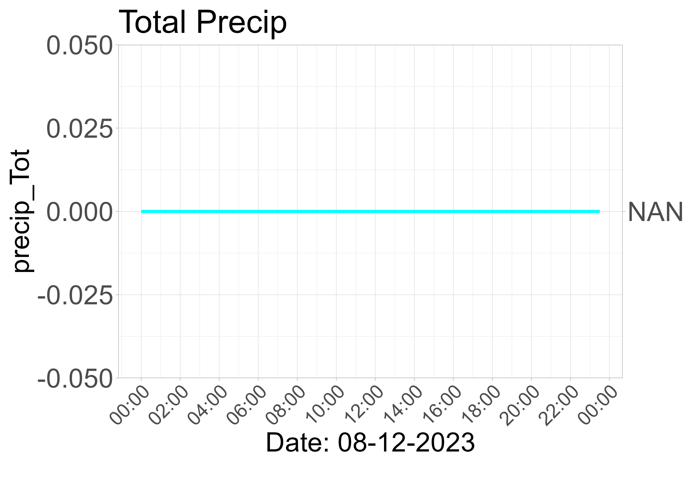

<div style='display:flex; flex-direction: column; align-items: center;'>
<h2>Today</h2>

<h2>Yesterday</h2>
<div style='text-align:center; max-width:500px;'><h3>Total Precip</h3>

<div style="border:1px solid black; background-color: #003366; padding:10px; color: white;">
Min: 0<br/>
Max: 0<br/>
Avg: 0
</div>
<hr></div></div>
